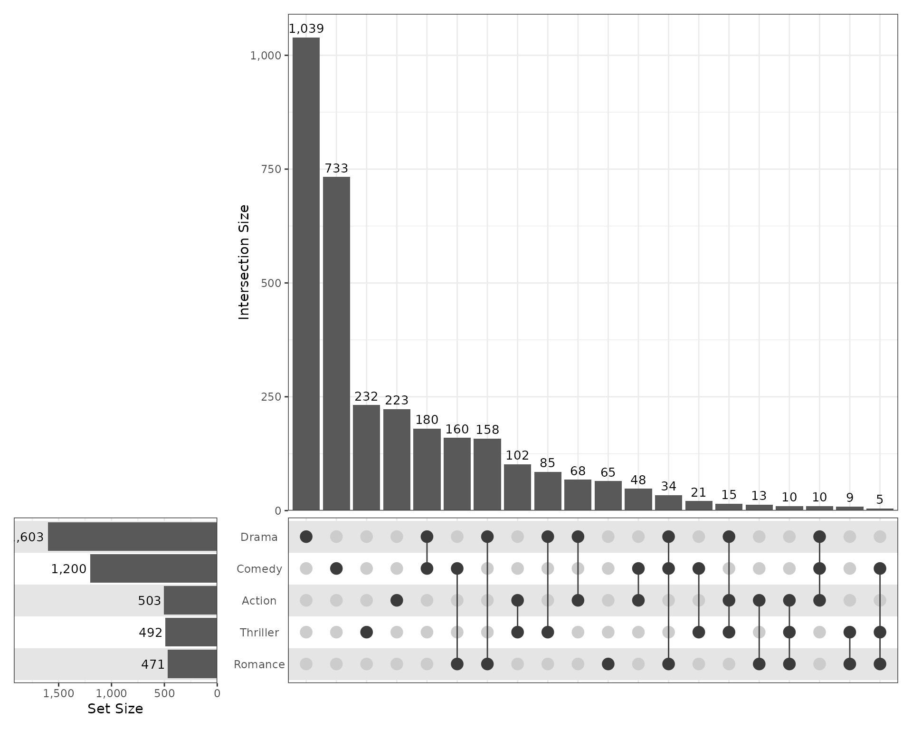
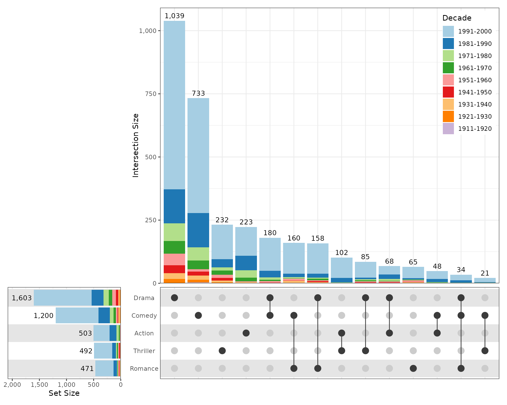
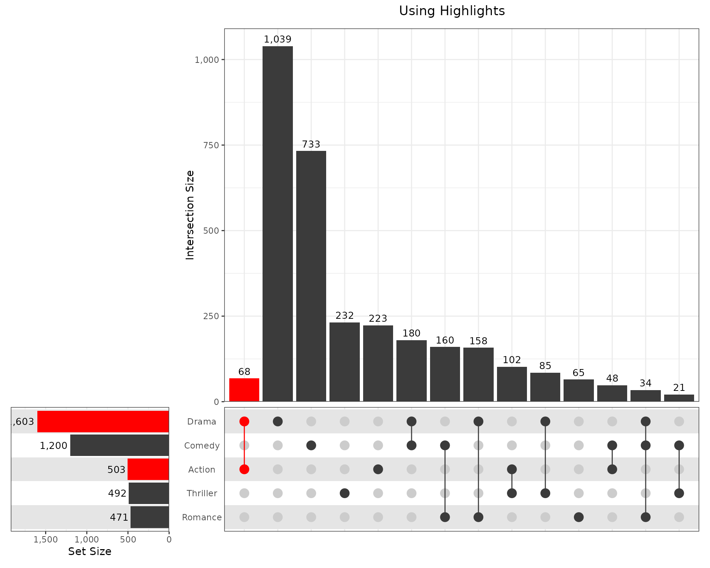
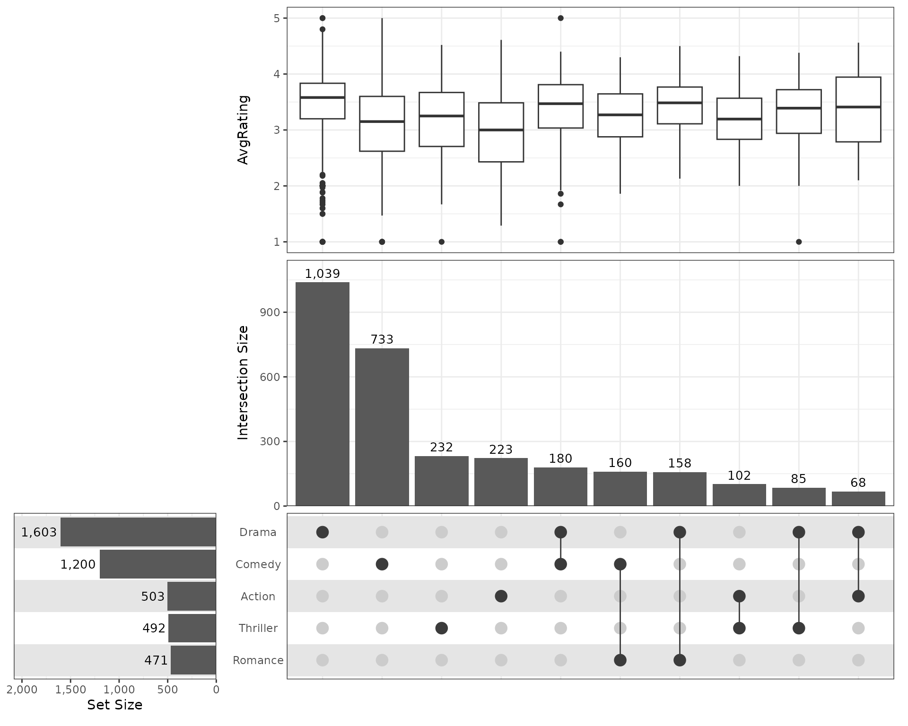

The package SimpleUpset has been written to ensure that
UpSet plots (Lex et al. 2014) remain
consistently available to the ecosystem of R users. The
underlying functions are built depending heavily on the package
infrastructure provided by the tidyverse (Wickham et al. 2019)
As is commonly used for examples, a modified version of the
movies data will be used for this set of examples, as
originally provided in the package UpSetR (Gehlenborg 2019). This version of the data has
a reduced number of categories and also has the decade of release
included
movies <- system.file("extdata", "movies.tsv.gz", package = "SimpleUpset") %>%
read_tsv() %>%
mutate(
Decade = fct_inorder(Decade) %>% fct_rev()
)| Decade | n |
|---|---|
| 1991-2000 | 2362 |
| 1981-1990 | 634 |
| 1971-1980 | 272 |
| 1961-1970 | 192 |
| 1951-1960 | 169 |
| 1941-1950 | 121 |
| 1931-1940 | 89 |
| 1921-1930 | 39 |
| 1911-1920 | 5 |
At it’s most simple, the function simpleUpSet requires a
data.frame with sets to include for display using the UpSet plots. The
sets should be strictly 0/1 values which can be coerced to
logical values, or logical values directly.
sets <- c("Action", "Comedy", "Drama", "Thriller", "Romance")
simpleUpSet(movies, sets)
The number of intersections can be controlled using the arguments
n_intersect to define a maximum number plotted, or
min_size to only show those greater than any given
size.
Each of the panels in the complete UpSet figure is referred to as
being either 1. sets (the bottom left), 2.
intersect (the top right panel), or 3. grid,
representing the intersections matrix at the bottom right. Default
layers for each panel are produced by the functions
default_set_layers(),
default_intersect_layers() or
default_grid_layers(). The default calls to ggplot layers,
scales, themes etc are easily visible by passing the argument,
dry_run = TRUE. These can then be copied to a new object to
begin customisation from a low level.
default_set_layers(dry_run = TRUE)
#> list(aes(y = set), geom_bar(bar_aes), geom_text(aes(x = size,
#> label = f(size)), hjust = hjust, size = label_size), scale_x_reverse(expand = c(expand,
#> 0, 0, 0), name = name, labels = f), scale_y_discrete(position = "right",
#> name = NULL, labels = NULL), theme(axis.text.y.right = element_text(hjust = 0.5),
#> axis.ticks.y.right = element_blank(), margins = margin(5.5,
#> 0, 5.5, 5.5)))A more simple strategy is to pass a set of key parameters to each
function as described on the help page. Any additional layers are
handled simply by the ellipsis (...)
simpleUpSet(
movies, sets, min_size = 20,
intersect_layers = default_intersect_layers(
fill = "Decade",
scale_fill_brewer(palette = "Paired"),
theme(
legend.position = "inside",
legend.position.inside = c(0.99, 0.99),
legend.justification.inside = c(1, 1)
)
),
set_layers = default_set_layers(
fill = "Decade", scale_fill_brewer(palette = "Paired"),
guides(fill = guide_none()), expand = 0.3
)
)
Sets and intersections can be simply highlighted using the set name
for sets, or by using a case_when() statement to define
highlights. If the highlight column is added to the underlying data
object, this column can additionally be used for determining
intersection order.
## Define the sets to be coloured by name, the use scale_fill_manual
set_cols <- c(
Action = "red", Comedy = "grey23", Drama = "red",
Romance = "grey23", Thriller = "grey23"
)
set_list <- default_set_layers(fill = "set", scale_fill_manual(values = set_cols))
## Use the highlights to colour the intersection bars based on the column
## 'highlight', in conjunction with the case_when statement
intersect_list <- default_intersect_layers(
fill = "highlight", scale_fill_manual(values = "red", na.value = "grey23")
)
## When passing the 'highlight' column, this will be passed to both points
## and segments. Each layer can be manually edited to override this if preferred
grid_list <- default_grid_layers(
colour = "highlight", scale_colour_manual(values = "red", na.value = "grey23")
)
simpleUpSet(
movies, sets, min_size = 20,
set_layers = set_list,
intersect_layers = intersect_list,
grid_layers = grid_list,
sort_intersect = list(highlight, desc(size)),
highlight = case_when(Action & Drama ~ TRUE)
) &
plot_annotation(title = "Using Highlights") &
theme(legend.position = "none", plot.title = element_text(hjust = 2/3))
Additional panels can be included using the annotations
argument
## Add a simple boxplot
simpleUpSet(
movies, sets, n_intersect = 10,
set_layers = default_set_layers(expand = 0.3),
intersect_layers = default_intersect_layers(expand = 0.1),
annotations = list(geom_boxplot(aes(y = AvgRating))),
)
There is no particular limit to the complexity of the upper panels, beyond what is contained within the dataset, or what can be considered as useful for communication with readers
simpleUpSet(
movies, sets, n_intersect = 10,
set_layers = default_set_layers(expand = 0.3),
intersect_layers = default_intersect_layers(expand = 0.1),
annotations = list(
list(
aes(y = AvgRating),
geom_jitter(aes(colour = Decade), height = 0, width = 0.3, alpha = 0.5),
geom_violin(fill = NA, quantiles = 0.5, quantile.linetype = 1),
scale_colour_brewer(palette = "Paired"),
guides(colour = guide_legend(nrow = 2, reverse = TRUE))
)
), guides = "collect"
) &
theme(legend.position = "bottom")R version 4.5.1 (2025-06-13)
Platform: x86_64-pc-linux-gnu
locale: LC_CTYPE=C.UTF-8, LC_NUMERIC=C, LC_TIME=C.UTF-8, LC_COLLATE=C.UTF-8, LC_MONETARY=C.UTF-8, LC_MESSAGES=C.UTF-8, LC_PAPER=C.UTF-8, LC_NAME=C, LC_ADDRESS=C, LC_TELEPHONE=C, LC_MEASUREMENT=C.UTF-8 and LC_IDENTIFICATION=C
attached base packages: stats, graphics, grDevices, utils, datasets, methods and base
other attached packages: pander(v.0.6.6), SimpleUpset(v.0.0.5), patchwork(v.1.3.2), lubridate(v.1.9.4), forcats(v.1.0.0), stringr(v.1.5.2), dplyr(v.1.1.4), purrr(v.1.1.0), readr(v.2.1.5), tidyr(v.1.3.1), tibble(v.3.3.0), ggplot2(v.4.0.0) and tidyverse(v.2.0.0)
loaded via a namespace (and not attached): sass(v.0.4.10), generics(v.0.1.4), stringi(v.1.8.7), hms(v.1.1.3), digest(v.0.6.37), magrittr(v.2.0.4), evaluate(v.1.0.5), grid(v.4.5.1), timechange(v.0.3.0), RColorBrewer(v.1.1-3), fastmap(v.1.2.0), jsonlite(v.2.0.0), scales(v.1.4.0), textshaping(v.1.0.3), jquerylib(v.0.1.4), cli(v.3.6.5), crayon(v.1.5.3), rlang(v.1.1.6), bit64(v.4.6.0-1), withr(v.3.0.2), cachem(v.1.1.0), yaml(v.2.3.10), parallel(v.4.5.1), tools(v.4.5.1), tzdb(v.0.5.0), vctrs(v.0.6.5), R6(v.2.6.1), lifecycle(v.1.0.4), bit(v.4.6.0), fs(v.1.6.6), vroom(v.1.6.6), ragg(v.1.5.0), pkgconfig(v.2.0.3), desc(v.1.4.3), pkgdown(v.2.1.3), pillar(v.1.11.1), bslib(v.0.9.0), gtable(v.0.3.6), glue(v.1.8.0), Rcpp(v.1.1.0), systemfonts(v.1.2.3), xfun(v.0.53), tidyselect(v.1.2.1), knitr(v.1.50), farver(v.2.1.2), htmltools(v.0.5.8.1), labeling(v.0.4.3), rmarkdown(v.2.29), compiler(v.4.5.1) and S7(v.0.2.0)